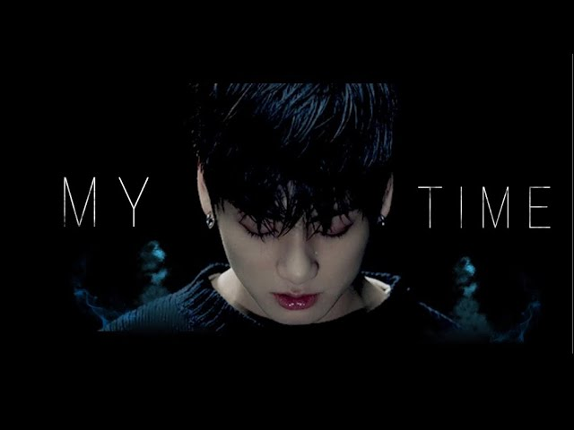

Jungkook - El Golden Maknae de BTS
Jeon Jungkook, conocido como el Golden Maknae de BTS, es el vocalista principal y uno de los
miembros más completos del grupo. Con su increíble talento, ha conquistado a fans en todo el mundo.
Biografía
Nacido el 1 de septiembre de 1997 en Busan, Corea del Sur, Jungkook es el miembro más joven de BTS. Desde
pequeño mostró un gran talento para la música y el baile, lo que lo llevó a convertirse en un miembro
fundamental del grupo. Su voz versátil y su increíble habilidad para bailar lo hacen destacar en cada
presentación.
Además de su talento musical, Jungkook también ha mostrado su destreza en otros campos, como la fotografía,
el diseño y el arte. Es conocido por ser un perfeccionista y por siempre esforzarse por mejorar en todo lo
que hace, lo que le ha ganado el cariño de los fans de todo el mundo.
Información Personal
| Nombre Real |
Jeon Jungkook |
| Fecha de Nacimiento |
1 de septiembre de 1997 |
| Posición en BTS |
Vocalista Principal, Bailarín |
| Altura |
178 cm |
| Debut en BTS |
13 de junio de 2013 |
| Mixtapes |
None (Hasta el momento) |
Canciones en Solitario Destacadas
Jungkook también ha lanzado canciones en solitario que muestran su increíble talento vocal y su
estilo único. Aquí te dejamos algunas de sus canciones más destacadas:

Euphoria
*Euphoria* es una de las canciones más populares de Jungkook, lanzada como parte del álbum *Love
Yourself: Answer* (2018). Esta canción destaca por su energética melodía y su emotiva interpretación
vocal, que resalta la versatilidad de Jungkook como cantante.
December
*December* es una canción emotiva que Jungkook lanzó como regalo para sus fans en 2016. La letra
expresa sentimientos de tristeza y nostalgia, mientras que su voz transmite de manera profunda esas
emociones.

My Time
*My Time* es una de las canciones que Jungkook lanzó en el álbum *Map of the Soul: 7* (2020). En
esta canción, Jungkook reflexiona sobre el paso del tiempo y su crecimiento personal dentro de BTS,
mostrando una de sus facetas más maduras como artista.
Frases Célebres de Jungkook
"Nunca dejes que las dudas te detengan. Si sigues adelante, siempre habrá algo brillante al final."
- Jungkook
"Sé siempre honesto contigo mismo. Haz lo que amas y no te preocupes por lo que los demás piensen."
- Jungkook
"No importa lo difícil que sea el camino, siempre habrá algo bueno al final si sigues luchando."
- Jungkook